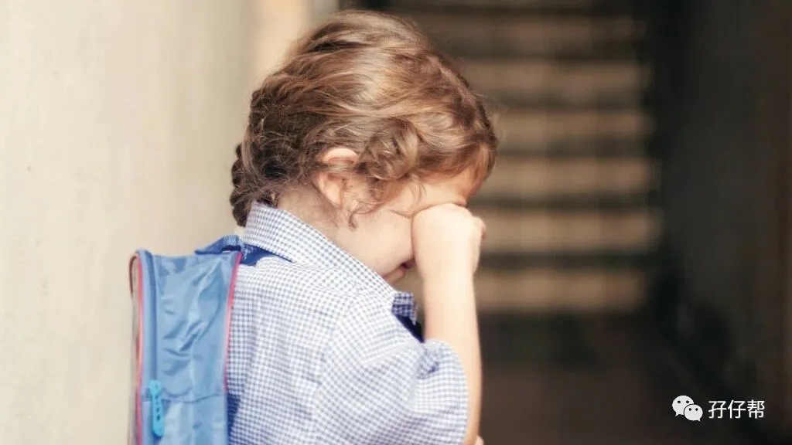
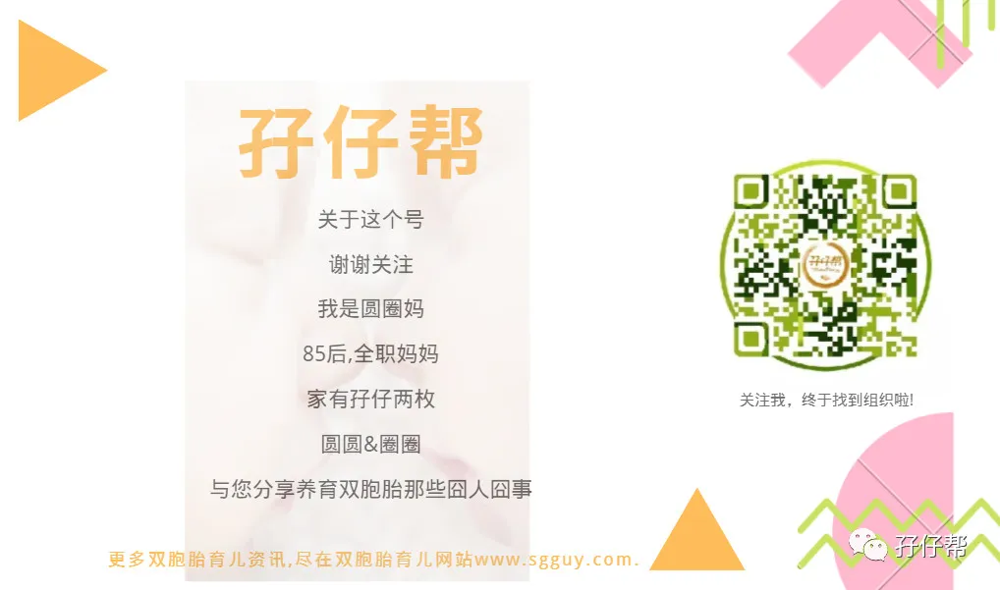

文|圆圈妈
图|来自网络侵删
· 正 · 文 · 来 · 啦 ·
开学日，赶紧来一篇扫盲帖！
本期推文将会结合双胞胎圆圈兄弟去年读小班的经历，提前预测双胞胎孩子们入园后可能发生的状况，让家长们心里有数，不至于盲目焦虑！
【01】
小心那些不会哭的双胞胎孩子
据不完全统计，双胞胎孩子第一次入园可能出现的情况，大抵有以下6种：
1. 第一天喜欢去，第二周耍赖不肯去！
2. 第一天大哭不肯去，一两周后坦然接受！
3. 第一天有一个不想去，另一个很想去！
4. 第二周，不想去的那个想去了，很想去的那个不想去了！
5. 不管任何时候，两个都是“我们讨厌幼儿园”！
6. 不管任何时候，两个都是“我们爱幼儿园”！
圆圈属于第1种和第6种兼备，是由第一种状态慢慢过度到第六种情况！
入园第一天，哥俩老早就穿上校服，背上书包嚷嚷着要上学去，我笃定他们只是雷声大雨点小，毕竟此刻幼儿园门口那正有一大波鬼哭狼嚎的熊孩子…我还特意穿上了防撕破的裤子等着被他们“抱大腿”！
没想到，他们无视小伙伴们的惨叫声，喜滋滋地扑到老师们怀里，招呼也不打，头也不回地往教室里冲。
可把我惊呆了：“难道我儿子们是个假人，没有七情六欲？”但不管怎样，对比那些被娃抱着大腿哭或者跟娃抱成一团哭的家长，我又觉得庆幸极了！
可是，我的双胞胎终究还是普通人两枚，同样知道“母鸡拉屎头边热”（客家俗语）
入园第二周，哥俩过了一个周末，那股新鲜热乎劲散去后就不想上学了！一个赖在床上闹情绪不肯换衣服，一个窝在沙发上懒懒散散地玩玩具...在各种威逼利诱下，他们才半推半就地出门！
好在他们这种抵抗情绪只持续了两周多，我也没有做特别的思想工作（只是精神上被虐了千百回），他们就渐渐地适应了幼儿园生活。
如果你的双胞胎入园的最初阶段（入园第一周）不哭不闹甚至异常兴奋不已，请不要高兴得太早，这是暴风雨来临前的宁静！做好被盘，被虐，被撕的准备吧！
如果你的双胞胎入园第一天就哭的死去活来，抱大腿，扯衣服，搂脖子…各种招式！请不要太沮丧，这是常态，也是必经之路！你能做啥呢？咬咬牙，说再见吧，挥一挥衣袖，不带走任何一片云彩！
如果你的双胞胎已经入园一个月了，依然一副“抵死不去幼儿园”的样子，赶紧找园方了解情况，从自己身上找原因，找孩子们谈谈，倾听他们的心声，如有必要时，可适当满足一些无理要求！
【02】
揭：双胞胎那些“不公平”的待遇
不得不承认，双胞胎去到哪里都自带主角光环，好像导演和编剧都被自己收买了似的，特写镜头和剧本全部按照私人方式订制好！
没错！双胞胎就是被区别对待了！但…莫慌！这里提到不公平待遇是正向的！
①很容易被老师同学们记住
不要小看这个“被记住”！尤其是新生入园，一个班35个熊孩子，只有3个老师，孩子们的所有需求全部响应到是不可能的！
倘若你家俩孩子在同一个班，特别“出众”，总是让老师们分不清到底谁是谁，总是让老师们每天点名要拿放大镜“找茬”，那你成功了！老师们会格外关注到这一对，稍有什么风吹草动都会及时发现并汇报给你。
②不容易生病
幼儿专家指出，在幼儿园刚开学的一个月内，由于环境改变，孩子身体和心理短时期内难以适应导致孩子容易生病，就连平时很少生病的孩子也有可能中招，奇怪的是，双胞胎孩子却没有这个困扰。
起初我也很担心，就凭他们那瘦不拉几的小样儿，要是遇上流感，手足口…估计会成为炮灰，可是他们整个学期都没有因病请假！
我只能这样安慰自己：他们一岁前经常生病，从小就相互传染病毒细菌，早已训练有素（病够了呗），普通的小病毒小细菌已然不是他们哥俩的对手。
当然，让双胞胎入园后少生病最万无一失的秘诀是，增强抵抗力，这才是王道！
③适应能力超好
孩子第一次入园，标志着真正意义上离开父母，独立成长。离开熟悉的人和环境，难免会有不适应！但对于有些双胞胎孩子来说，这个问题似乎可以忽略不计。
圆圈刚入园那几天虽然经常小状况频发，但都发生在家里而不是在幼儿园，老师们反馈，他们不会无理由哭闹，即便是受挫了，也不会吵着要回家，而是两兄弟隔空互看一眼，继续哭一会儿就没事了。
因此，老师们都笑称，只要空气中有他的哥/弟的气味在就行！在哪都无所谓！
这让我嘚瑟极了，双胞胎从小就互相有伴儿，当处于新环境时，会比其他孩子多了双倍的勇气去面对，适应能力自然也会强大些！
【03】
如胶似漆的双胞胎VS苦大深仇的双胞胎
入园后的双胞胎在最初的人际交往上，会出现两种极端情况：
两人只跟彼此玩，拒绝与其他小朋友接触。
彼此不找对方玩，但若没见着了，又觉得离不开对方
圆圈属于第二种，他们经常不在一起玩，即便是老师刻意把他们安排在一起，他们好像有仇似的，不自觉地分散开来。
更有意思的是，他们不相亲相爱就算了，还会为了某个玩具打得不可开交！但若是分开在不同的游戏区域，他们就会心不在焉，左顾右盼。
这个可能因人而异！
有些双胞胎习惯了只有两人的玩乐空间，突然出现那么多小伙伴，反而有种领土被侵犯的感觉，于是就对其他小朋友有抵触心理！
圆圈班上有一对龙凤胎就是如此，当哥哥跟其他小伙伴玩，温顺可人的妹妹就生气甚至扑过去咬人，生怕哥哥被人抢走了似的！家长把他们兄妹分开在不同班级后，问题就迎刃而解了！
这里涉及到一个颇有争议的话题：双胞胎该不该分班，孖仔帮后续会出推文专门探讨下。
不管双胞胎属于哪种情况，家长们都要高度重视！及时引导！
入园前，双胞胎生活在一起，其实本身就是一个小集体，有其自然形成的“潜规则”，当这个小集体遇到大集体时，他们手足间固有的平衡感就会被打破！
如何维持他们手足间的相处平衡，以及让这个特殊小集体快速和谐地融入到大集体，都将是父母们在双胞胎入园后格外关注的问题！（欲知详情，欢迎来双胞胎教育群探讨哈！）
最后，来点“鸡血汤”！双胞胎家长们专享！
这学期，双胞胎圆圈兄弟上中班了，回顾过去一年的小班经历，我的切身体会就是：生双胞胎的好处远远不是你想象中的只有那么一点点！
入园后的双胞胎孩子会开始发挥“我们是双胞胎”的特殊能力，你会不经意间挖掘到更多双胞胎园内生活的特殊待遇，你等着睡着都会偷笑吧！
相关阅读：
双胞胎家庭生存技巧01：舍不得孩子套不住狼，新生入园开学季必备
-END-
今日互动话题
#双胞胎入园，你哭了还是笑了？#
评论区聊一聊呗！
一好文推荐一
一加入社群一
一关注孖仔帮一
觉得此文有点意思嘛？？请点“在看”



